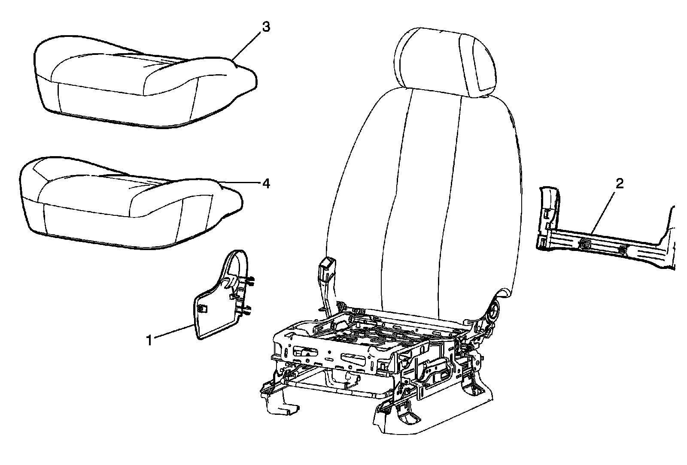
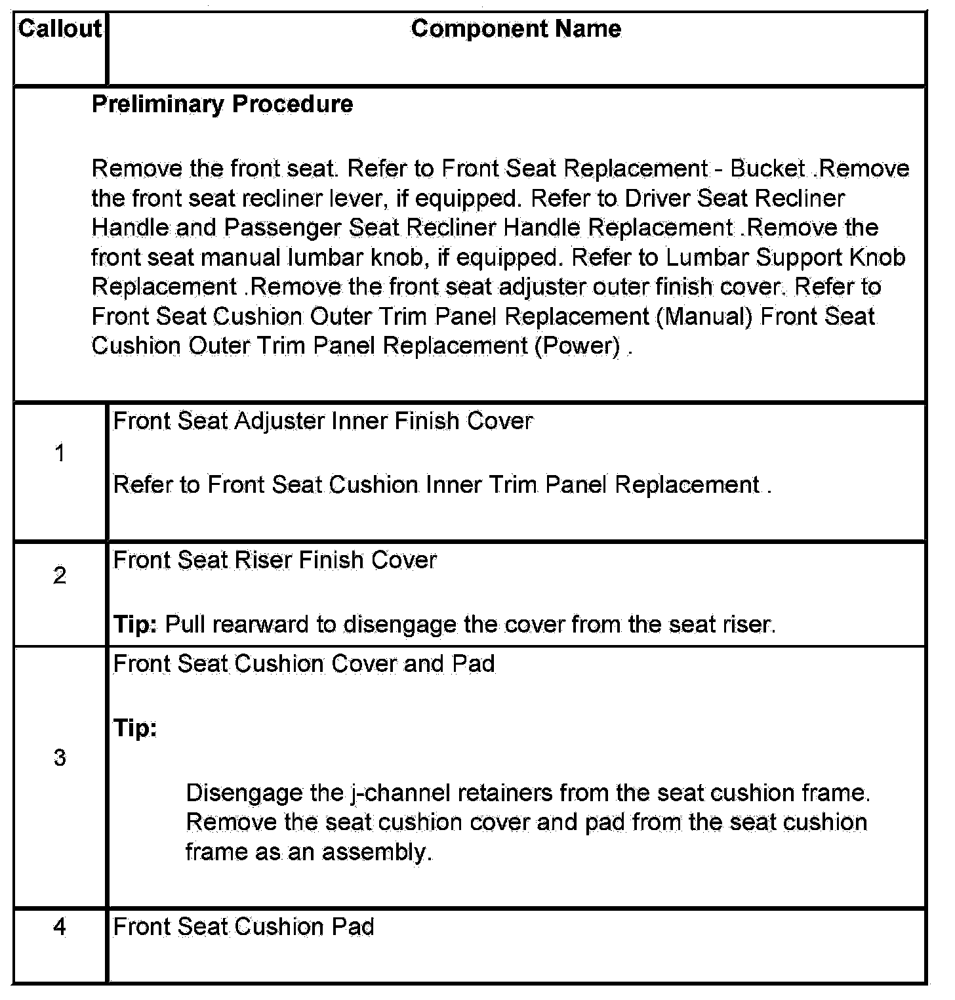

Operation CHARM
: Car repair manuals for everyone.
Home
>>
Cadillac
>>
2007
>>
Escalade ESV AWD V8-6.2L
>>
Repair and Diagnosis
>>
Body and Frame
>>
Seats
>>
Seat Cushion
>>
Service and Repair
>>
Seat Cushion Trim Cover and Pad Replacement
Seat Cushion Trim Cover and Pad Replacement
Seat Cushion
Trim Cover and Pad Replacement

